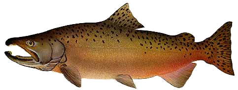

Locations
Alki
949 Willow Lane
Alki, WA 82604
(206) 246-2426
jray935@pats-cookies.biz
Capital Hill
215 Grant Circle
Capital Hill, WA 56177
(206) 310-7770
mpark810@pats-cookies.biz
First and Pike
1st and Pike
Seattle, WA 98108
(206) 864-3724
kcarter483@pats-cookies.biz
SeaTac Airport
19415 International Blvd S.
SeaTac, WA 98108
(206) 323-4505
tduncan503@pats-cookies.biz
Seattle Center
10 Space Needle Way
Seattle, WA 98108
(206) 910-9101
cfellow206@patc-cookies.biz

About Us
It all started with an idea. What if we combined our love of salmon with our love of cookies? Thus the salmon cookie was born as seen here:

Pat and the family have been making and enjoying salmon cookies ever since. They currently are operating 5 locations with more to come!

Merchandise
Merchandise is available for purchase at any of our 5 salmon cookie selling locations. We currently offer a stylish t-shirt and whale shaped cookie cutter. Stop on by and buy!


Salmon Events
Issaquah Salmon Days!
The Issaquah Salmon Days is a two-day award-winning free festival held in Issaquah, Washington, United States, held from 10am to 6pm on the Saturday and Sunday of the first full weekend of October. It is initiated by a parade, celebrating the return of the salmon to their birth-waters, that embraces Issaquah's history, culture, and ethnic diversity. The festival showcases over 270 arts and crafts artisans, attracting many Northwest artists. The art sold includes wood, glass, jewelry, paintings, pottery, and metal. There are five stages for live entertainment, including cover bands, a kids' stage, and a Bluegrass stage. Sporting events include 5K/10K runs (and a 1K run for kids), a Sporting Weekend which is held the weekend prior to the festival and includes geoteaming, a treasure hunt around Issaquah using GPS. Veterans' Memorial Park is used as the "Field of Fun" offering entertainment for children.
